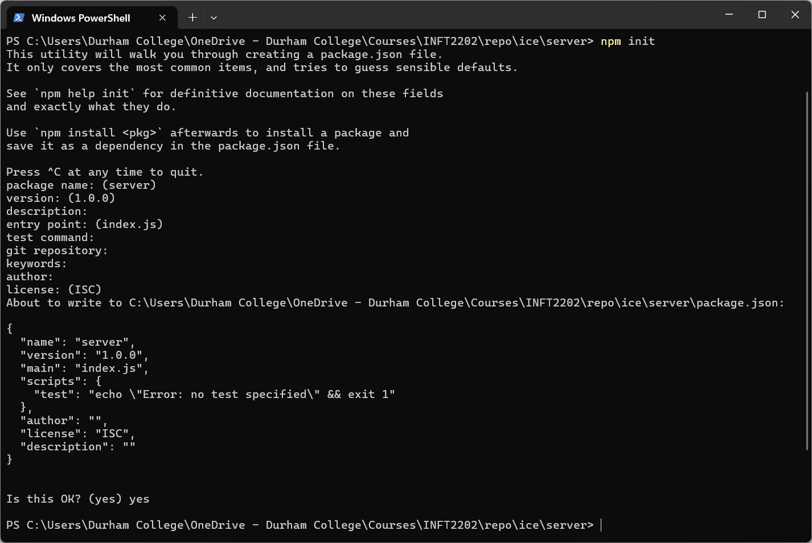
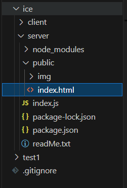

Week 8
Intro to Node.js
Node.js is an open-source and cross-platform JavaScript runtime environment. It is a popular tool for almost any kind of project!
Node.js runs single-threaded, non-blocking, asynchronous programming, which is very memory efficient.
The foundation of asynchronous programming in JavaScript is the Promise.
Run Javascript with Node.js
node myfirst.jsNodeJS Modules
NodeJS NPM
Intro to Express.js
Express is a popular unopinionated web framework, written in JavaScript and hosted within the Node.js runtime environment.
Install ExpressJs with npm
initial npm
cd ice
mkdir server
cd server

install Express.js
browse http://localhost:3000
npm install express
import express from "express";
const app = express();
const port = 3000;
app.get("/", (req, res) => {
res.send("Hello World!");
});
app.listen(port, () => {
console.log(`Example app listening on port ${port}!`);
});
Serving Static Assets
create a public folder under root, then copy ice client's index.html over

Index.js
import express from "express";
const app = express();
const port = 3000;
app.use(express.static('public')); //add this line
app.get("/hello", (req, res) => {
res.send("Hello World!");
});
app.listen(port, () => {
console.log(`Example app listening on port ${port}!`);
});
localhost:3000 will get index.html. localhost:3000/hello will get hello response